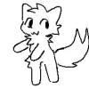

가짜퍼리냐 진짜퍼리냐
댓글
내가 본 개드립은 다 퍼리 조아를 외치던데..

동물 귀랑 꼬리까지만 가능
아니 근데 왜 꼬추로 예시로 들였냐. 게이퍼리색들아
내가 본 개드립은 다 고추 조아를 외치던데..
오른쪽이 고추인지는 아직 모르는거지
안좋아해
네코미미 까지는 ㄱㅊ
곰에 박은 환웅 이래 퍼리는 민족정신이다
반박시 이완용
좋아하는척도 안하고 좋아하지도 않아
나 사실 퍼리 아님 동물만 좋아함
2d는 좋은데 퍼슈트는 아직 거리감있음
집에 퍼슈트 ３벌 보유
퍼슈트 없으면 가짜털박이
사실 난 가짜퍼리야. 아, 보추사랑은 진짜야ㅎ


와우 종족 선택 시 늑대인간 처음으로 고름
왜 예시가 남자나 게이야
진짜죠
보추 퍼리 게이 레즈 다꺼져 오직 순애만이 남을것이다
퍼리 별론데
제길! 주토피아가 날!!!
5대5 황금비율 뭐냐 ㄷㄷ
이게 왜 엄대엄찍고있냐 미친놈들아..
회사에 진짜 퍼리좋아하는 남자 20살짜리있는데.. 말할때마다 너무 찐스러움이 뭍어남..
배경화면이 퍼리더라 그래서 알게됨..
엄대엄 ㄷㄷ

진짜 퍼리는 자기 털로 만든 스웨터 있을거 같지 않냐


골고루 먹어야 착한 어른이에요
꺼져 초콜릿이나 쳐먹어
세상에이게뭐노...
ㄹㅇ똥게이드립넷
글마다 보추 퍼리 거근 쇼타 가지 이런거만 자꾸 올라올때부터 짐작했다
실망이 큽니다 개붕이들..
4발짐승까지는 가능
적당한 모든 분야 퍼먹긴 하는데
ㄲㅈ난백합조아임

왜 좋아하는 척도 안한다는 선택지가 없냐 ㅋㅋ